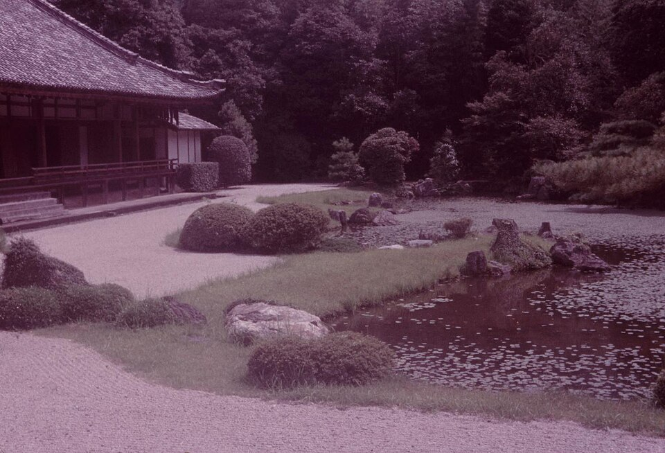
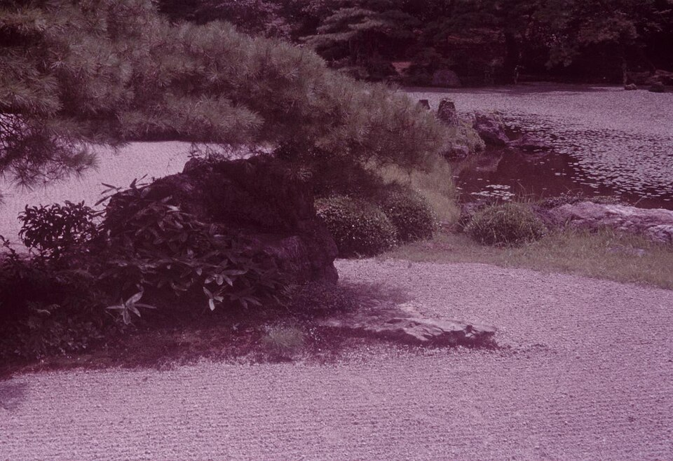
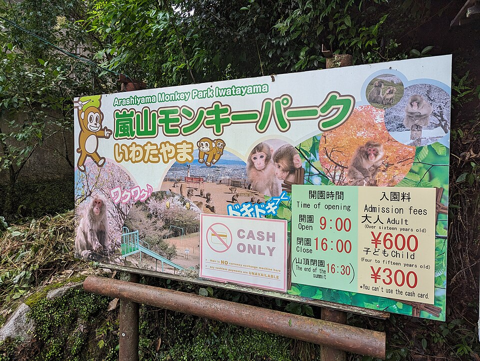
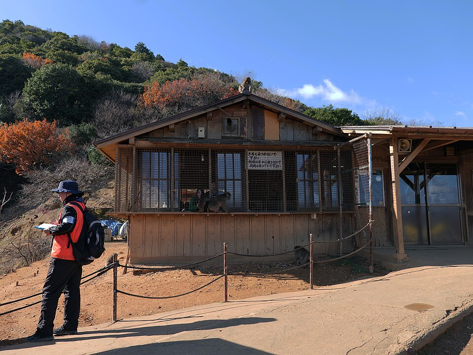
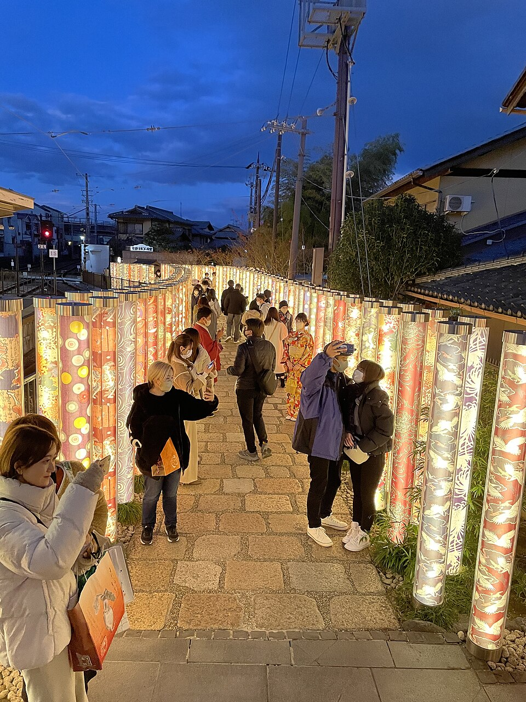
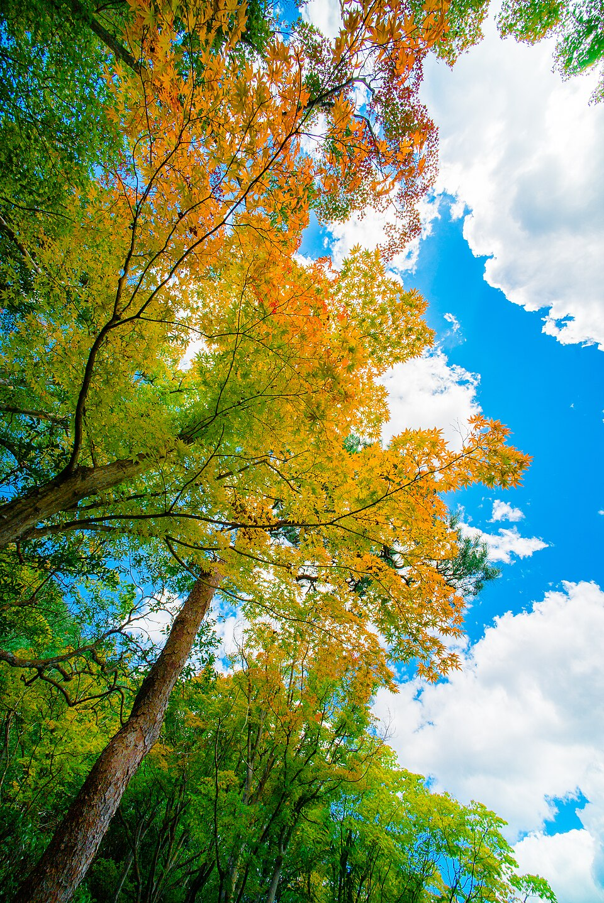
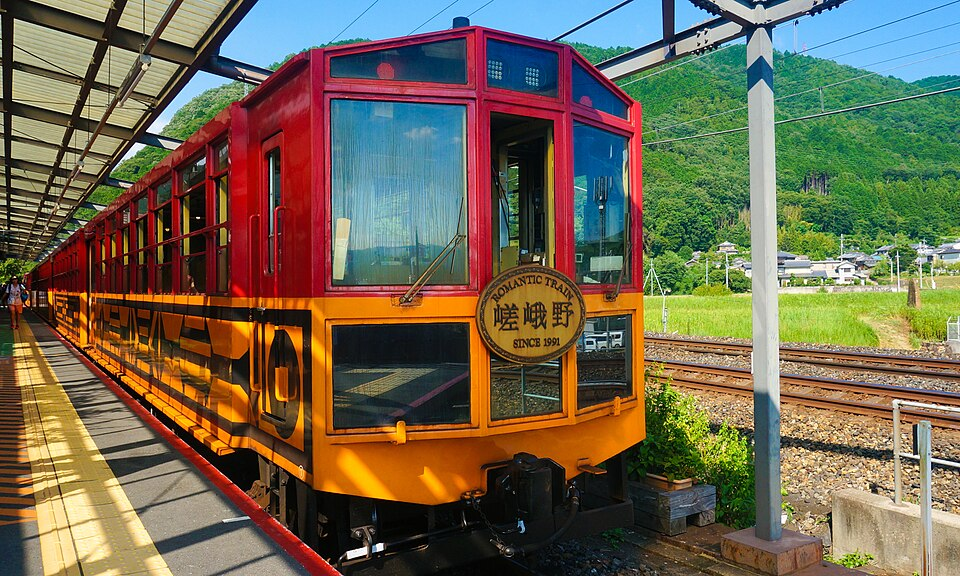

8Бамбуковая роща Arashiyama и Tenryu-ji




Sagano Bamboo Grove - 500-метровая тропа среди бамбуковых стволов высотой до 20 м, звук скрипа бамбука на ветру входит в список «100 звуковых пейзажей Японии». У входа в рощу - Tenryu-ji, храм 1339 года, объект ЮНЕСКО, с садом Sogen-chi XIV века в стиле «заимствованного пейзажа»: гора Arashiyama служит ему фоном.
Роща: бесплатно, круглосуточно. Tenryu-ji: 8:30-17:00, сад ~¥500. Людно утром из-за автобусных туров, тише после 16:00.
Всё в районе Arashiyama - чек-лист
Отметил ✅ то, что по твоим словам ты уже видел (роща, храмы вокруг, парк с обезьянами). Остальное - по мере удаления от рощи, для самопроверки.
✅ Nonomiya Shrine
Маленькое святилище прямо у входа в бамбуковую рощу.
Бесплатно, открыто всегда.
✅ Iwatayama Monkey Park


Подъём на холм (~20 мин в гору) к площадке с дикими японскими макаками и видом на город. На вершине можно кормить обезьян из клетки (сетка защищает людей, не животных).
По фото таблички на входе: ~9:00-16:00 (вход), ¥600 взрослый / ¥300 детский, только наличные. Разные путеводители называют и ¥800/¥400 - цена могла измениться, сверь на месте.
• Togetsukyo Bridge
Мост через реку Katsura южнее рощи, с видом на горы Arashiyama. Можно спуститься к воде.
Бесплатно, в любое время.
• Kimono Forest

Арт-инсталляция у станции Randen Arashiyama: around 600 прозрачных колонн с традиционными узорами ткани kyo-yuzen. Если шёл от рощи к JR-станции, а не к трамвайной Randen - мог пройти мимо.
Бесплатно, круглосуточно, на фото вечерняя подсветка - днём на солнце смотрится иначе.
• Okochi Sanso Villa

Вилла актёра немого кино Okochi Denjiro с садом и видом на город, в конце тропы через рощу, за северными воротами Tenryu-ji. Вход платный, в цену входит чай с сладостями.
9:00-17:00, ~¥1 000 (с чаем).
• Jojakko-ji и Gio-ji
Два тихих храма чуть севернее, в стороне от туристического потока: Jojakko-ji на склоне с видом на долину, Gio-ji с мшистым садом и легендой о гейше. Обычно их пропускают, кто не уходит дальше рощи.
Jojakko-ji: 9:00-17:00 (вход до 16:30), ¥500. Gio-ji: те же часы, ¥300.
• Adashino Nenbutsu-ji
Храм с тысячами маленьких каменных статуй Будды, собранных с заброшенных могил округи - памяти безымянным умершим.
Часы и цену по официальному источнику не нашёл - уточни на месте.
• Otagi Nenbutsu-ji
Ещё дальше на север (за кластером Jojakko-ji/Gio-ji/Adashino) - 1200 каменных статуй rakan (учеников Будды), у каждой своё лицо и поза, часть вырезана самими прихожанами в XX веке.
По одному источнику 8:00-17:00 - не проверено официально.
• Daikaku-ji
Бывший императорский дворец IX века, храм с большим прудом Osawa. Ещё севернее, уже на отшибе от остальной Arashiyama.
Часы и цену не нашёл в надёжном источнике - уточни на месте.
• Sagano Romantic Train + лодки по Hozugawa

Отдельная платная поездка: туристический поезд Sagano Scenic Railway идёт 25 минут вдоль реки Hozu до Kameoka, оттуда можно спуститься обратно на лодке по порогам (~2 часа). Места не продаются по интернету без тура, садятся на станции Torokko Saga (рядом с JR Saga-Arashiyama).
Поезд и лодка - отдельные билеты, бронировать на месте или заранее в агентствах туров.
Рядом


_-_DPLA_-_45fc0cff56b54886c9d8d1c71faea7ae.jpg){kind=link}

_-_DPLA_-_f393bc28e25857521bfddcf0ee4f42b3.jpg){kind=link}


_Monkey_Park_hdsr_S5_23.jpg){kind=link}


.jpg){kind=link}


Фото: Wikimedia Commons (лицензии под каждым фото). Часы и цены проверены 20.10.2026 по путеводителям и официальным сайтам - перепроверь перед визитом, сезонно меняются. ← ко всем местам